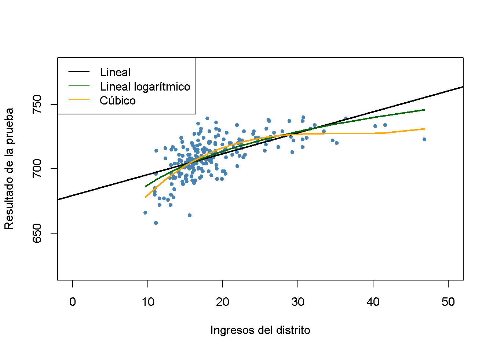

10.4 Ejemplo: Puntajes de exámenes y tamaño de la clase
Esta sección analiza la validez interna y externa de los resultados obtenidos del análisis de los datos de las calificaciones de las pruebas de California utilizando modelos de regresión múltiple.
Validez externa del estudio
La validez externa del análisis de puntaje de la prueba de California significa que sus resultados se pueden generalizar. Que esto sea posible depende de la población y el entorno. Se realiza el mismo análisis utilizando datos para estudiantes de cuarto grado en distritos escolares públicos de \(220\) en Massachusetts en 1998. Al igual que CASchools, el conjunto de datos MASchools es parte del paquete AER (Kleiber and Zeileis 2020). Se puede utilizar la función de ayuda (?MASchools) para obtener información sobre las definiciones de todas las variables contenidas.
Se debe comenzar cargando el conjunto de datos y procediendo a calcular algunas estadísticas resumidas.
library("AER")
# adjuntar el conjunto de datos 'MASchools'
data("MASchools")
summary(MASchools)
#> district municipality expreg expspecial
#> Length:220 Length:220 Min. :2905 Min. : 3832
#> Class :character Class :character 1st Qu.:4065 1st Qu.: 7442
#> Mode :character Mode :character Median :4488 Median : 8354
#> Mean :4605 Mean : 8901
#> 3rd Qu.:4972 3rd Qu.: 9722
#> Max. :8759 Max. :53569
#>
#> expbil expocc exptot scratio
#> Min. : 0 Min. : 0 Min. :3465 Min. : 2.300
#> 1st Qu.: 0 1st Qu.: 0 1st Qu.:4730 1st Qu.: 6.100
#> Median : 0 Median : 0 Median :5155 Median : 7.800
#> Mean : 3037 Mean : 1104 Mean :5370 Mean : 8.107
#> 3rd Qu.: 0 3rd Qu.: 0 3rd Qu.:5789 3rd Qu.: 9.800
#> Max. :295140 Max. :15088 Max. :9868 Max. :18.400
#> NA's :9
#> special lunch stratio income
#> Min. : 8.10 Min. : 0.40 Min. :11.40 Min. : 9.686
#> 1st Qu.:13.38 1st Qu.: 5.30 1st Qu.:15.80 1st Qu.:15.223
#> Median :15.45 Median :10.55 Median :17.10 Median :17.128
#> Mean :15.97 Mean :15.32 Mean :17.34 Mean :18.747
#> 3rd Qu.:17.93 3rd Qu.:20.02 3rd Qu.:19.02 3rd Qu.:20.376
#> Max. :34.30 Max. :76.20 Max. :27.00 Max. :46.855
#>
#> score4 score8 salary english
#> Min. :658.0 Min. :641.0 Min. :24.96 Min. : 0.0000
#> 1st Qu.:701.0 1st Qu.:685.0 1st Qu.:33.80 1st Qu.: 0.0000
#> Median :711.0 Median :698.0 Median :35.88 Median : 0.0000
#> Mean :709.8 Mean :698.4 Mean :35.99 Mean : 1.1177
#> 3rd Qu.:720.0 3rd Qu.:712.0 3rd Qu.:37.96 3rd Qu.: 0.8859
#> Max. :740.0 Max. :747.0 Max. :44.49 Max. :24.4939
#> NA's :40 NA's :25Es bastante fácil replicar los componentes clave en una tabla usando R. Para ser coherentes con los nombres de las variables utilizadas en el conjunto de datos CASchools, se aplican algunos formatos de antemano.
# variables personalizadas en MASchools
MASchools$score <- MASchools$score4
MASchools$STR <- MASchools$stratio
# crear la tabla
vars <- c("score", "STR", "english", "lunch", "income")
cbind(CA_mean = sapply(CASchools[, vars], mean),
CA_sd = sapply(CASchools[, vars], sd),
MA_mean = sapply(MASchools[, vars], mean),
MA_sd = sapply(MASchools[, vars], sd))
#> CA_mean CA_sd MA_mean MA_sd
#> score 654.15655 19.053347 709.827273 15.126474
#> STR 19.64043 1.891812 17.344091 2.276666
#> english 15.76816 18.285927 1.117676 2.900940
#> lunch 44.70524 27.123381 15.315909 15.060068
#> income 15.31659 7.225890 18.746764 5.807637Las estadísticas resumidas revelan que el puntaje promedio de las pruebas es más alto para los distritos escolares de Massachusetts. La prueba que se usa en Massachusetts es algo diferente a la que se usa en California (la calificación de la prueba de Massachusetts también incluye los resultados de la materia escolar “Ciencias”), por lo que no es apropiada una comparación directa de las calificaciones de las pruebas. También se puede ver que, en promedio, las clases son más pequeñas en Massachusetts que en California y que el ingreso promedio del distrito, el porcentaje promedio de estudiantes de inglés y el porcentaje promedio de estudiantes que reciben almuerzos subsidiados difieren considerablemente de los promedios calculados para California. También existen diferencias notables en la dispersión observada de las variables.
Examinando la relación entre los ingresos del distrito y los puntajes de las pruebas en Massachusetts como se hizo antes en el Capítulo 9 para los datos de California y se produce una gráfica.
# estimar modelo lineal
Linear_model_MA <- lm(score ~ income, data = MASchools)
Linear_model_MA
#>
#> Call:
#> lm(formula = score ~ income, data = MASchools)
#>
#> Coefficients:
#> (Intercept) income
#> 679.387 1.624
# estimar modelo lineal logarítmico
Linearlog_model_MA <- lm(score ~ log(income), data = MASchools)
Linearlog_model_MA
#>
#> Call:
#> lm(formula = score ~ log(income), data = MASchools)
#>
#> Coefficients:
#> (Intercept) log(income)
#> 600.80 37.71
# estimar modelo cúbico
cubic_model_MA <- lm(score ~ I(income) + I(income^2) + I(income^3), data = MASchools)
cubic_model_MA
#>
#> Call:
#> lm(formula = score ~ I(income) + I(income^2) + I(income^3), data = MASchools)
#>
#> Coefficients:
#> (Intercept) I(income) I(income^2) I(income^3)
#> 600.398531 10.635382 -0.296887 0.002762# graficar datos
plot(MASchools$income, MASchools$score,
pch = 20,
col = "steelblue",
xlab = "Ingresos del distrito",
ylab = "Resultado de la prueba",
xlim = c(0, 50),
ylim = c(620, 780))
# agregar una línea de regresión estimada para el modelo lineal
abline(Linear_model_MA, lwd = 2)
# agregar función de regresión estimada para el modelo lineal logarítmico
order_id <- order(MASchools$income)
lines(MASchools$income[order_id],
fitted(Linearlog_model_MA)[order_id],
col = "darkgreen",
lwd = 2)
# agregar función de regresión cúbica estimada
lines(x = MASchools$income[order_id],
y = fitted(cubic_model_MA)[order_id],
col = "orange",
lwd = 2)
# agrega una leyenda
legend("topleft",
legend = c("Lineal","Lineal logarítmico","Cúbico"),
lty = 1,
col = c("Black", "darkgreen", "orange"))
La gráfica indica que la especificación cúbica se ajusta mejor a los datos. Curiosamente, esto es diferente de los datos de CASchools, donde el patrón de no linealidad se describe mejor mediante la especificación del modelo lineal logarítmico.
Se continua estimando la mayoría de las especificaciones del modelo utilizadas para el análisis del conjunto de datos CASchools en el Capítulo 9 y usando stargazer() (Hlavac 2018) para generar una representación tabular de los resultados de la regresión.
# agregar 'HiEL' a 'MASchools'
MASchools$HiEL <- as.numeric(MASchools$english > median(MASchools$english))
# estimar las especificaciones del modelo a partir de la tabla
TestScore_MA_mod1 <- lm(score ~ STR, data = MASchools)
TestScore_MA_mod2 <- lm(score ~ STR + english + lunch + log(income),
data = MASchools)
TestScore_MA_mod3 <- lm(score ~ STR + english + lunch + income + I(income^2)
+ I(income^3), data = MASchools)
TestScore_MA_mod4 <- lm(score ~ STR + I(STR^2) + I(STR^3) + english + lunch + income
+ I(income^2) + I(income^3), data = MASchools)
TestScore_MA_mod5 <- lm(score ~ STR + I(income^2) + I(income^3) + HiEL:STR + lunch
+ income, data = MASchools)
TestScore_MA_mod6 <- lm(score ~ STR + I(income^2) + I(income^3) + HiEL + HiEL:STR + lunch
+ income, data = MASchools)
# recopilar errores estándar robustos
rob_se <- list(sqrt(diag(vcovHC(TestScore_MA_mod1, type = "HC1"))),
sqrt(diag(vcovHC(TestScore_MA_mod2, type = "HC1"))),
sqrt(diag(vcovHC(TestScore_MA_mod3, type = "HC1"))),
sqrt(diag(vcovHC(TestScore_MA_mod4, type = "HC1"))),
sqrt(diag(vcovHC(TestScore_MA_mod5, type = "HC1"))),
sqrt(diag(vcovHC(TestScore_MA_mod6, type = "HC1"))))# generar una tabla con 'stargazer()'
library(stargazer)
stargazer(Linear_model_MA, TestScore_MA_mod2, TestScore_MA_mod3,
TestScore_MA_mod4, TestScore_MA_mod5, TestScore_MA_mod6,
title = "Regresiones usando datos de puntajes de las prueba en Massachusetts",
type = "latex",
digits = 3,
header = FALSE,
se = rob_se,
object.names = TRUE,
model.numbers = FALSE,
column.labels = c("(I)", "(II)", "(III)", "(IV)", "(V)", "(VI)"))| Variable dependiente: Puntaje | ||||||
| score | ||||||
| (I) | (II) | (III) | (IV) | (V) | (VI) | |
| STR | -1.718*** | -0.689** | -0.641** | 12.426 | -1.018*** | -0.672** |
| (0.499) | (0.270) | (0.268) | (14.010) | (0.370) | (0.271) | |
| I(STR2) | -0.680 | |||||
| (0.737) | ||||||
| I(STR3) | 0.011 | |||||
| (0.013) | ||||||
| english | -0.411 | -0.437 | -0.434 | |||
| (0.306) | (0.303) | (0.300) | ||||
| HiEL | -12.561 | |||||
| (9.793) | ||||||
| lunch | -0.521*** | -0.582*** | -0.587*** | -0.709*** | -0.653*** | |
| (0.078) | (0.097) | (0.104) | (0.091) | (0.073) | ||
| log(income) | 16.529*** | |||||
| (3.146) | ||||||
| income | -3.067 | -3.382 | -3.867 | -3.218 | ||
| (2.353) | (2.491) | (2.488) | (2.306) | |||
| I(income2) | 0.164* | 0.174* | 0.184** | 0.165* | ||
| (0.085) | (0.089) | (0.090) | (0.085) | |||
| I(income3) | -0.002** | -0.002** | -0.002** | -0.002** | ||
| (0.001) | (0.001) | (0.001) | (0.001) | |||
| STR:HiEL | 0.799 | |||||
| (0.555) | ||||||
| Constant | 739.621*** | 682.432*** | 744.025*** | 665.496*** | 759.914*** | 747.364*** |
| (8.607) | (11.497) | (21.318) | (81.332) | (23.233) | (20.278) | |
| Observations | 220 | 220 | 220 | 220 | 220 | 220 |
| R2 | 0.067 | 0.676 | 0.685 | 0.687 | 0.686 | 0.681 |
| Adjusted R2 | 0.063 | 0.670 | 0.676 | 0.675 | 0.675 | 0.674 |
| Residual Std. Error | 14.646 (df = 218) | 8.686 (df = 215) | 8.607 (df = 213) | 8.626 (df = 211) | 8.621 (df = 212) | 8.637 (df = 214) |
| F Statistic | 15.616*** (df = 1; 218) | 112.284*** (df = 4; 215) | 77.232*** (df = 6; 213) | 57.803*** (df = 8; 211) | 66.023*** (df = 7; 212) | 91.560*** (df = 5; 214) |
| Note: | *p<0.1; **p<0.05; ***p<0.01 | |||||
Table 10.1: Regresiones usando datos de puntajes de las prueba en Massachusetts
A continuación, se reproducen los estadísticos \(F\) y los valores de \(p\) para probar la exclusión de grupos de variables.
# modelo de prueba F (3)
linearHypothesis(TestScore_MA_mod3,
c("I(income^2)=0", "I(income^3)=0"),
vcov. = vcovHC, type = "HC1")
# modelo de pruebas F (4)
linearHypothesis(TestScore_MA_mod4,
c("STR=0", "I(STR^2)=0", "I(STR^3)=0"),
vcov. = vcovHC, type = "HC1")
linearHypothesis(TestScore_MA_mod4,
c("I(STR^2)=0", "I(STR^3)=0"),
vcov. = vcovHC, type = "HC1")
linearHypothesis(TestScore_MA_mod4,
c("I(income^2)=0", "I(income^3)=0"),
vcov. = vcovHC, type = "HC1")
# modelo de pruebas F (5)
linearHypothesis(TestScore_MA_mod5,
c("STR=0", "STR:HiEL=0"),
vcov. = vcovHC, type = "HC1")
linearHypothesis(TestScore_MA_mod5,
c("I(income^2)=0", "I(income^3)=0"),
vcov. = vcovHC, type = "HC1")
linearHypothesis(TestScore_MA_mod5,
c("HiEL=0", "STR:HiEL=0"),
vcov. = vcovHC, type = "HC1")
# modelo de prueba F (6)
linearHypothesis(TestScore_MA_mod6,
c("I(income^2)=0", "I(income^3)=0"),
vcov. = vcovHC, type = "HC1")Se puede ver que, en términos de \(\bar{R}^2\), la especificación (3), que usa un cúbico para modelar la relación entre el ingreso del distrito y los puntajes de las pruebas, funciona mejor que la especificación de registro lineal (2). Usando diferentes pruebas \(F\) en los modelos (4) y (5), no se puede rechazar la hipótesis de que no existe una relación no lineal entre la proporción de alumnos por maestro y el puntaje de la prueba y también que la proporción de estudiantes de inglés tiene una influencia en la relación de interés. Además, la regresión (6) muestra que el porcentaje de estudiantes de inglés se puede omitir como regresor. Debido a que las especificaciones del modelo hechas en (4) a (6) no conducen a resultados sustancialmente diferentes a los de la regresión (3), se elige el modelo (3) como la especificación más adecuada.
En comparación con los datos de California, se observan los siguientes resultados:
Controlar las características de antecedentes de los estudiantes en la especificación del modelo (2) reduce el coeficiente de interés (proporción estudiante-maestro) en aproximadamente \(60\%\). Los coeficientes estimados están próximos entre sí.
El coeficiente de la proporción alumno-maestro siempre es significativamente diferente de cero al nivel de \(1\%\) para ambos conjuntos de datos. Esto es válido para todas las especificaciones del modelo consideradas en ambos estudios.
En ambos estudios, la proporción de estudiantes de inglés en un distrito escolar es de poca importancia para el impacto estimado de un cambio en la proporción de estudiantes por maestro en el puntaje de la prueba.
La mayor diferencia es que, en contraste con los resultados de California, no se encuentra evidencia de una relación no lineal entre los puntajes de las pruebas y la proporción de alumnos por maestro para los datos de Massachusetts, ya que las pruebas correspondientes de \(F\) para el modelo (4) no rechazan la hipótesis nula.
Como se señala, los puntajes de las pruebas de California y Massachusetts tienen diferentes unidades porque las pruebas subyacentes son diferentes. Por lo tanto, los coeficientes estimados en la proporción alumno-maestro en ambas regresiones no se pueden comparar antes de estandarizar los puntajes de las pruebas a las mismas unidades que \[\frac{Testscore - \overline{TestScore}}{\sigma_{TestScore}}\] para todas las observaciones en ambos conjuntos de datos y ejecutando las regresiones de interés utilizando nuevamente los datos estandarizados. Se puede demostrar que el coeficiente de la proporción de alumnos por maestro en la regresión que utiliza las puntuaciones de las pruebas estandarizadas es el coeficiente de la regresión original dividido por la desviación estándar de las puntuaciones de las pruebas.
Para el modelo (3) de los datos de Massachusetts, el coeficiente estimado de la proporción alumno-maestro es de \(-0.64\). Se predice que una reducción de la proporción de estudiantes por maestro en dos estudiantes aumentará los puntajes de las pruebas en \(-2 \cdot (-0.64) = 1.28\) puntos. Por lo tanto, se puede calcular el efecto de una reducción de la proporción de estudiantes por maestro de dos estudiantes en los puntajes de las pruebas estandarizadas de la siguiente manera:
TestScore_MA_mod3$coefficients[2] / sd(MASchools$score) * (-2)
#> STR
#> 0.08474001Para Massachusetts, el aumento previsto de los puntajes de las pruebas debido a una reducción de la proporción de estudiantes por maestro en dos estudiantes es de \(0.085\) desviaciones estándar de la distribución observada de los puntajes de las pruebas.
Utilizando la especificación lineal (2) para California, el coeficiente estimado de la proporción alumno-maestro es \(-0.73\), por lo que el aumento previsto de las puntuaciones de las pruebas inducido por una reducción de la proporción alumno-maestro por dos estudiantes es \(-0.73 \cdot (-2) = 1.46\). Usando R para calcular el cambio previsto en las unidades de desviación estándar:
TestScore_mod2$coefficients[2] / sd(CASchools$score) * (-2)
#> STR
#> 0.07708103Esto muestra que el aumento previsto de los puntajes de las pruebas debido a una reducción de la proporción de estudiantes por maestro en dos estudiantes es de \(0.077\) desviación estándar de la distribución observada de los puntajes de las pruebas para los datos de California.
En cuanto a los resultados de las pruebas estandarizadas, el cambio previsto es esencialmente el mismo para los distritos escolares de California y Massachusetts.
En conjunto, los resultados apoyan la validez externa de las inferencias hechas utilizando datos sobre los distritos de escuelas primarias de California, al menos para Massachusetts.
Validez interna del estudio
La validez externa del estudio no asegura su validez interna. Aunque la especificación del modelo elegido mejora sobre un modelo de regresión lineal simple, la validez interna aún puede violarse debido a algunas de las amenazas enumeradas en el Concepto clave 9.7. Dichas amenazas son:
Sesgo variable omitido.
Especificación incorrecta de la forma funcional.
Errores en variables.
Problemas de selección de muestras.
Causalidad simultánea.
Heterocedasticidad.
Correlación de errores entre observaciones.
Resumen
Se ha encontrado que existe un efecto pequeño pero estadísticamente significativo de la proporción de alumnos por maestro en los puntajes de las pruebas. Sin embargo, no está claro si de hecho se ha estimado el efecto causal de interés ya que — a pesar de que el enfoque incluye variables de control, teniendo en cuenta las no linealidades en la función de regresión de la población y la inferencia estadística utilizando errores estándar robustos — los resultados aún podrían estar sesgados; por ejemplo, si hay factores omitidos que no se han considerado. Por tanto, la validez interna del estudio sigue siendo cuestionable. Como se concluyó de la comparación con el análisis del conjunto de datos de Massachusetts, este resultado puede ser válido externamente.
Los siguientes capítulos abordan técnicas que pueden ser remedios para todas las amenazas a la validez interna enumeradas en el Concepto clave 9.7 si la regresión múltiple por sí sola es insuficiente. Esto incluye regresión usando datos de panel y enfoques que emplean variables instrumentales.